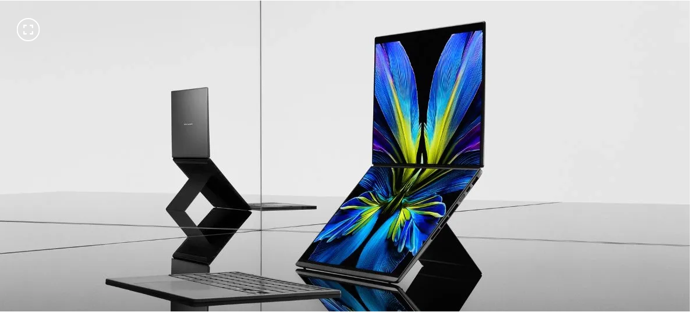
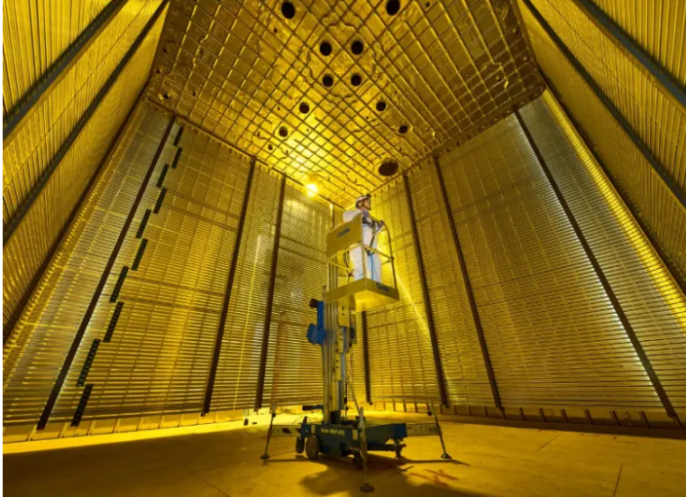

Noticias de Tecnología

ASUS Zenbook DUO (2026): características, rendimiento y novedades del nuevo portátil de doble pantalla
El fabricante presentó en CES 2026 una actualización de su portátil de dos paneles OLED táctiles de 14 pulgadas.
El equipo mantiene el concepto de dos pantallas OLED táctiles de 14 pulgadas unidas por una bisagra central, complementadas por un teclado Bluetooth removible que se puede superponer sobre el panel inferior para operar la computadora como un portátil convencional.
Entre las modificaciones de diseño de esta versión se encuentran una bisagra oculta que reduce la separación entre paneles en un 70 % respecto al modelo anterior, la utilización de Ceraluminum en el chasis y una configuración de batería dual.

Investigadores de tres universidades paisas participan en uno de los mayores experimentos de física del mundo
Investigadores de la Universidad de Antioquia, EIA y de Medellín hacen parte del Experimento de Neutrinos Subterráneo Profundo (DUNE), que estudia una de las partículas más enigmáticas del universo. Necesitan el apoyo de MinCiencias para esta colaboración científica.
Esta semana, las partículas más enigmáticas del cosmos se robaron la atención del mundo entero. Con la entrega de este martes del Premio Nobel de Física al físico belga Francis Halzen, millones de personas escucharon por primera vez sobre la existencia de los neutrinos, partículas elementales de la naturaleza, la segunda más abundante del universo y que se caracterizan por poder atravesar la materia a casi la velocidad de la luz sin apenas interactuar con ella.
Halzen recibió el galardón entregado por la Real Academia Sueca de Ciencias por liderar el desarrollo de IceCube, el observatorio de neutrinos ubicado en la Antártida, considerado como uno de los experimentos para el estudio de estas partículas más relevantes del mundo. Sin embargo, este no es el único proyecto que actualmente se dedica a desentrañar los misterios de los neutrinos.
El Experimento de Neutrinos Subterráneo Profundo (DUNE, por sus siglas en inglés) es una iniciativa que cuenta con la participación de más de 1.500 investigadores de 35 países. Con el propósito de conocer más sobre las propiedades de estas partículas, de este proyecto de grandes dimensiones hacen parte seis universidades colombianas, entre ellas tres antioqueñas.
Así es como físicos e ingenieros de la Universidad de Antioquia, la Universidad de Medellín y la Universidad EIA están trabajando en un experimento que podría tener como resultado avances científicos y tecnológicos nunca antes vistos.
Los neutrinos también son conocidos como “partículas fantasmas” porque casi no interaccionan con lo que se encuentran a su paso. Justo esa característica es la que les permite atravesar con gran facilidad la materia. Amalia Betancur, física de la EIA que está participando en DUNE, lo explica con el encendido de una linterna: “si dirijo la luz hacia una pared, no puedo iluminar lo que hay al otro lado. ¿Por qué? Porque la luz interactúa con los materiales que encuentra en su camino y la pared la bloquea. Los neutrinos, en cambio, no tienen ese mismo problema: pueden atravesar grandes cantidades de materia sin interactuar con ella. Por eso nos permiten estudiar fenómenos y regiones del universo que de otra manera serían difíciles de observar”.
La IA no podrá ser 'maltratada': Anthropic prohíbe la 'crueldad sostenida e innecesaria' de los usuarios hacia sus modelos
La compañía aplicará nuevas restricciones contra conductas abusivas y actualizará sus normas sobre elecciones, vigilancia y armas.
Anthropic anunció una actualización de las políticas de uso de Claude que prohibirá los comportamientos abusivos o crueles, sostenidos e innecesarios hacia sus modelos de inteligencia artificial (IA)
Las nuevas disposiciones entrarán en vigor el 12 de noviembre de 2026 y también contemplan modificaciones relacionadas con los procesos electorales, la vigilancia y el desarrollo de sistemas de armamento.
La compañía tecnológica incorporó una disposición dirigida a situaciones extremas en las que los usuarios mantienen conductas crueles de manera reiterada contra sus sistemas de inteligencia artificial, sin que exista una finalidad identificable.
La inteligencia artificial ya está cambiando la forma de buscar y comprar viajes
Los agentes de IA prometen acompañar al viajero desde la búsqueda de un destino hasta la compra. El reto de las empresas será tener datos organizados
La inteligencia artificial está dejando de ser una herramienta para responder preguntas y empieza a convertirse en un nuevo intermediario entre los viajeros y las empresas turísticas.
Ese fue uno de los temas que surgió durante las conversaciones sobre tecnología e innovación en la industria de los viajes, en el marco del Congreso Mundial del WTTC, que se realiza en Malta hasta el 9 de octubre.
El llamado viajero superempoderado, con acceso a más información y herramientas para tomar decisiones, está evolucionando hacia un usuario que podrá delegar buena parte de la planificación y gestión de sus viajes en agentes de inteligencia artificial.
Estos agentes podrán buscar opciones, comparar información, verificar condiciones y, eventualmente, realizar transacciones en nombre del viajero. Para la industria turística, esto supone un cambio que va mucho más allá de incorporar un chatbot a una página web.
"El reto para muchas de las empresas con las que estamos trabajando es cómo organizar sus datos internos para poder ofrecer esa experiencia. Por eso, hoy la conversación gira alrededor de una palabra: datos", dijo Paul Griffiths, director ejecutivo de Dubai Airports.